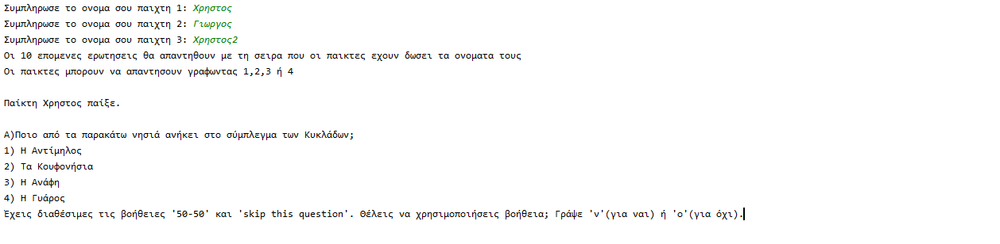
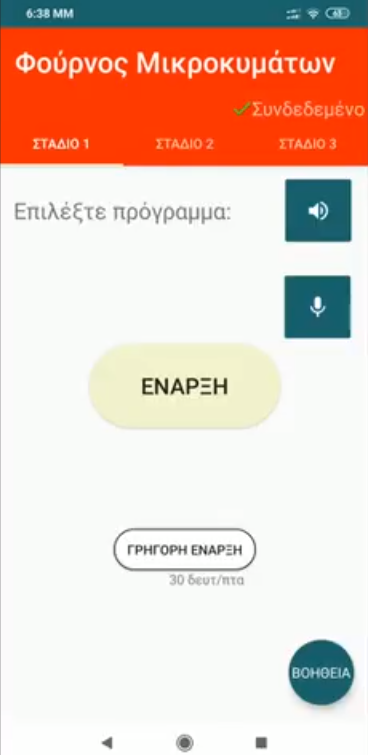
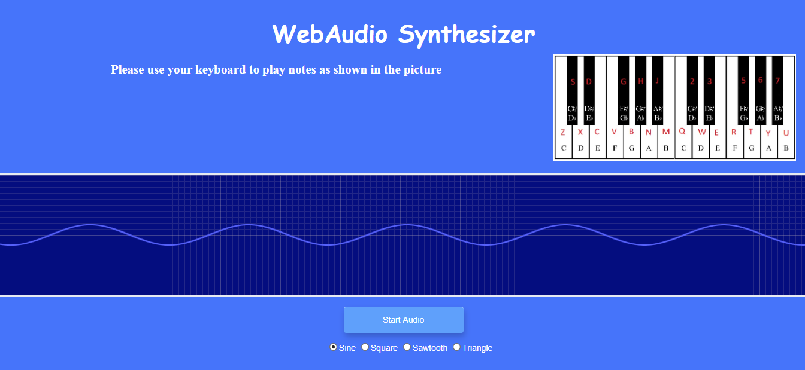

Universtity experience: Projects
The following are three projects from different courses i have done as an undergraduate student at AUEB. Two of them are written in different programming languages and one of them is a web page. You can see more of my projects on my Github account.
-
Question Game
One of the first projects i had to do as a freshman was a game in Python. The goal of the game is to answer the questions correctly and win the other players. There are 3 players and 10 main questions, there is also an eleventh question which the player can choose as help, and 4 different answers for each question. There are 2 options the "50-50" and the "skip this question". The "50-50" option will cut the 4 answers to 2, while the "skip this question" option will skip the question the player has and replace it with the eleventh question.
 -
Microwave Interface
 This Android app is a team project and is a friendly interface for a microwave. It doesn't connect with a microwave in reality but the purpose of this app is to be handled by people with no experience in technology and/or have mild vision loss. Also, the main language of the app is greek. The app is split into 3 stages. Each stage has a button for instructions that can be heard and a microphone button that user can use it according to the instructions. 1st stage is the first screen that the user can see and via buttons can continue to the next stages. In the 2nd stage, the user can select and edit the preferable program. The 3rd stage is a review of what the user has selected and completed the process.
-
WebAudio Synthesizer
This project is also a team project and is a web page. The interface of the project is made with Html and a Css file, the sound and all the options to change it use Javascript. The core of this program is the WebAudio API, we had to use it in order to produce sound and manipulate it. The implemented functions are Oscillator, VCF, LFO(Vibrato,Tremolo) and ADSR.
